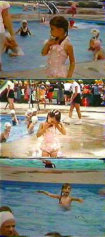

|
 |
Being
an only child, and somewhat of a withdrawn one, Travis fashioned her verdant suburb into an invisible playmate. Already familiar with the rituals of being poolside at age three, by five she was jumping the back fence of the country club to play in the grounds of the old Gatsby mansion, now in an inexorable decline. When Travis found the book in her father's study she read it in one sitting. Her favorite passage (she even transcribed it) was when James Gatz renamed himself Jay Gatsby. Seventeen years old and rowing into a new identity. Travis began to examine the possibilities of transformation. |